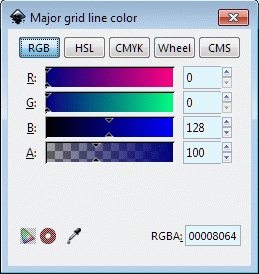
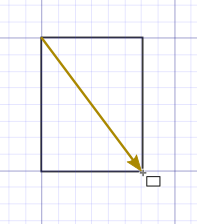
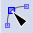
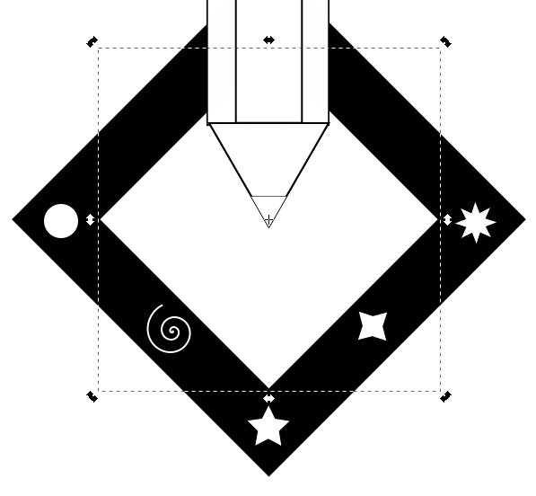
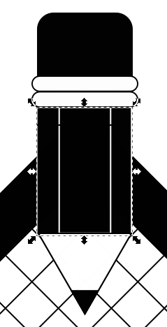

Many objects in the Inkscape program can be created by starting with basic shapes and then
editing them to create new shapes. In this tutorial, you will use some basic shapes to create a logo.
In this tutorial on the work area, you will learn how to:
use tools and commands to create basic shapes.
copy and combine objects to create new shapes.
use rulers, grids, and guides as drawing aids.
paint objects.
scale objects using the bounding box.
Prepping for this tutorial
Start Inkscape.
Click on File > Open and open the
Tutorial03Image01.svg file in the Tutorial03 folder.
If you like, choose View > Zoom Out to make the finished artwork smaller, adjust the window size,
and leave it on your screen as you work. Move the artwork where you want it in the window using the <Shift>+
arrow keys. If you don't want to leave the image open, choose File > Close.
Now create the start file to begin the lesson.
Choose File > New to open a new, untitled document.
Choose File > Save As..., name the file Logo, and select the Tutorial03 folder
in the Save In menu. Leave the default file format as Inkscape SVG (*.svg). Inkscape
will automatically append the filename with .svg as it saves.
Setting up the Document
You'll begin this tutorial by
closing the color palette and Command toolbar that you won't use,
displaying a grid to use as a guideline for drawing,
setting the ruler units to inches,
opening the Snap Controls bar to adjust the positioning of objects.
Close the color palette by pressing <Shift>+<Alt>+p or choosing View > Show/Hide > Palette.
To close the Commands toolbar, choose View > Show/Hide < Commands Bar. For now, you won't need to use it.
Choose View > Page Grid to display a grid that's useful for measuring, drawing, and aligning shapes.
The grid won't print with the artwork.
If the rulers are not visible along the top and left side of the window, choose View > Show/Hide > Rulers to
display them. The ruler units are set by default to pixels.
You can change ruler units for the current document. The ruler unit of measure applies to measuring objects,
moving and transforming objects, setting grid and guide spacing, and creating ellipses and rectangles.
(It does not affect the units in the Character, Paragraph, and Stroke palettes.)
Choose File > Document Properties to change the ruler units for only this document.
In the Document Properties dialog box, click on the Grids tab, for Grid units choose inches in
the drop-down selection box (in).
Choose in (inches) from the Grid units drop-down menu.
We will now change the grid spacing so that squares measure 1/8 inch on each side. With the Document Properties dialog
still active, change the Spacing-X and Spacing-Y measurements to 0.125 (Press <Enter> after each entry). The grid
spacing now shows squares that measure 1/8 inch on each side.
Changing the grid spacing.
We will make the major grid lines a darker blue than they are currently. Click on the Major Grid Line Color bar.
The Major Grid Line Color dialog appears. Enter the numbers from the figure below to create major grid lines that are
colored navy blue:

Major Grid Line Color dialog. The numbers produce a navy blue color.
Close the Major Grid Line Color and Document Properties dialogs when done.
Choose View > Show/Hide > Snap Controls Bar to display the Snap Controls bar.
Snap Controls bar.
Using Basic Shape Tools
In this tutorial, you'll create a simple logo using the basic shape tools. The shape tools include the:
Create rectangles and squares tool (),
Create circles, ellipses, and arcs tool (), and
Create stars and polygons tool ().
Drawing the Pencil Shape
In Inkscape, you control the thickness and color of lines that you draw by setting stroke attributes.
A stroke is the paint characteristics of a line or the outline of an object. A fill is the paint
characteristics of the inside of an object. The default settings will let you see the objects you
draw with a white fill and a black outline.
Select the Zoom tool ()
in the toolbox, and click in the middle of the window once or twice until you are zoomed in to about 150%.
(Notice that 150%, more or less, is displayed in the bottom left corner of the window.)
Choose View > Guides to turn them on. Guides automatically snap the edges of objects
to nearby objects or their intersect points as you move them.
Select the Create Rectangles and Squares tool (),
and drag it to draw a rectangle that's 0.75 inches wide and 1 inch tall. (Use the rulers and the grid as guides.)
This will be the body of the pencil.
Note the rectangle's height and width in the Tool Controls bar:
If the rectangle's dimensions are not correct, as seen in the figure above, it's easy to change them.
Click on the rectangle's edge if it isn't still selected. Then, click in the W (width) box and change
the measurement to .75. Do the same with the H (height) box, changing the measurement to 1.
The rectangle's dimensions will update accordingly.
You'll draw another rectangle centered inside the first one to represent the two vertical lines on the pencil.
With the Rectangle tool still selected, position the pointer over the center point of the rectangle, hold
down the <Shift> key, and drag out from the center point to draw a rectangle that's centered inside it.
Release the mouse button when the rectangle is the same height as the first rectangle (1 inch). If the unit of
measurement is not in inches (in), click in that box and choose in from the drop-down menu. In the width
(W) box, change the measurement to 0.42 so the inner rectangle won't appear unnecessarily broad.
Holding down <Shift> as you drag the Rectangle tool draws the rectangle from its center point rather
than from its top left corner.

Drag to draw first rectangle<Shift>-drag to draw second rectangle
Now you'll create a rounded rectangle for the eraser using the Edit paths by nodes tool.
Choose the Rectangle tool and create a 0.75 in × 0.75 in square using the grid lines to snap the
figure into a good position. Leave the square selected.
Choose the Edit paths by nodes tool ().
Left click on the circular handle on the upper right corner of the square and drag it down by one grid square. Release the
mouse button. All four corners of the square are now rounded.
Drag the circular handle down one grid square length to round all four square corners.
You will now snap the eraser shape to the top of the pencil body.
Choose View > Show/Hide > Snap Controls Bar to display the Snap Controls bar above the window.
Click the Selection tool if it is not already selected.
Click on the edge of the rounded square to select it.
Click on the Enable snapping button at the far left of the Snap Controls bar () to activate the snapping function.
Click on the Snap bounding boxes button which is the next button to the right of the Enable snapping button. It looks identical to the Enable snapping button but has a different tool tip description.
Click on the Snap midpoints of bounding box edges button ().
Drag the rounded square shape until it is close to the top of the pencil body and release the left mouse button. The eraser immediately shifts into place squarely on the top of the pencil body. If you under- or overshoot, just drag the erase into place and see the pulling action of the snapping function.
Result
Next you'll create two shapes to represent the metal bands connecting the eraser to the pencil.
To prevent automatic snapping to a grid line that will misalign your objects, click on the Snap to
grids button ()
to turn the feature off. Keep the other snapping features on because they will help in aligning objects properly.
To make the first band, create a rounded box 1 square high and 8 squares long. Note that the corners are
already rounded because the rounding function carries over into your next created rectangle or square.
Create the first band.
Now move the band to the top of the pencil body using the Selection tool. Becausing the snapping function is still active, the band will snap into position.
Reposition the first band.
Resize the length of the band to 0.85 inches by clicking in the width (W) bar and typing in .85 <Enter>. The band automatically resizes.
Resizing the band.
Now move the band with the Selection tool so that it snaps into its properly centered
position on top of the pencil body.
Moving the resized band.
Copy the band by selecting it (if it's been deselected) and then pressing <Ctrl>-D (D or d
for duplicate). A copy of the band now sits directly on top of the original. Drag the
copy of the band up until it snaps into place above the first band.
Copying the band.
Now you'll draw two triangles to represent the pencil tip and its lead using Outline view.
Choose View > Display mode > Outline to switch from Normal view to Outline view.
Pencil body in Outline view.
Select the Polygon tool ().
In the Corners box, change the number of corners to 3:
Position the pointer over the center point of the two rectangles.
<Shift>-drag to begin drawing a triangle, but don't release the mouse button. Move the mouse in an arc to rotate one side of the triangle to the top.
Drawing a triangle.
While still pressing the left mouse button, drag the triangle down to position it just below
the pencil body. Release the mouse button when the triangle is positioned. The triangle will
snap into place.
Moving the triangle.
Now you'll create the second triangle for the pencil's lead tip.
With the triangle still selected (select it if it isn't), left-click on the edge and, with the left mouse
button still pressed, tap the spacebar once and then drag the copy of the triangle off to the left or right for
resizing.
Moving the triangle.
<Ctrl>-click on the triangle and shrink it down so that its edges are about one square edge in length.
Reducing the size of the second triangle.
The pencil lead tip looks a little too small. We'll make it a little larger. If the pencil lead triangle isn't selected, then select it so we can edit its size.
Now click on the open lock icon in the Tool Controls bar (), located between the width (W) bar and height (H) bar, to toggle it
closed ().
When the lock is closed, you can change the size of a selected object without changing one or another dimension
individually (in other words, you maintain the aspect ratio).
Change the height (H) to 0.2 in the the Height box and press <Enter>.
Move the reduced triangle so that it fits exactly into the tip of the larger triangle at the bottom of the
pencil body. The Snap function will snap the smaller triangle into place.
Positioning the second triangle.
Next you will use the line Segment tool to quickly draw a horizontal line segment near the top of the pencil.
Select the line Segment tool (),
and position the pointer over the left side of the pencil near the top. Click where you want the line to begin and release the mouse button. Press the <Ctrl> button and move the mouse without pressing the left mouse button to drag to where you want the line to end. As you move the mouse, keeping holding down <Ctrl>
to constrain the line horizontally. When you reach the other side, click with the left mouse button to set the
end of the line segment.
Drawing with the Line tool.
Choose File > Save to save your work.
Drawing the Piece of Stationery
You can draw the diamond-shaped piece of stationery for the logo in a couple of ways. One way is to draw four-sided polygons
(using the same methods you used to draw the triangle for the pencil tip). Another way is to draw using the Rectangle tool,
and the Select and Transform tool.
Select the Rectangle tool () in the toolbox, and position the pointer over the center point of the pencil body.
Hold down <Ctrl> and drag the tool to draw a square of any size from the center of the pencil.
Holding down the <Ctrl> key while dragging the Rectangle tool constrains the rectangle to a square.
Holding down <Shift> draws the rectangle from its center point rather than from the top left corner. Holding down both the <Ctrl> and <Shift> keys allows you to draw a square from its
center point out.
How you'll use the W (width) and H (height) text boxes to enter precise dimensions for the square.
Type 2.25 in the W text box and 2.25 in the H text box. Press <Enter> to apply the changes.
<Ctrl>-drag to make a square of any size from pencil's center.Set new width and height.Result.
Choose File > Save to save your work.
Drawing with the Rectangular Grid Tool
With the grid tool, you can create different types grids. You can generate rectangular (Cartesian) grids, concentric circles for polar grids, respectively, of a specified size with a specified number of dividers.
Now you'll add a grid to the stationery. Unlike the view grid, this grid can print.
To make this next part of the lesson easier to visualize, choose View > Page Grid to turn off the grid display.
Choose Entensions > Render > Grids > Cartesian Grid... The Cartesian Grid dialog appears. Enter the numbers in the
figure below to design the grid. Click on Apply
Inkscape chugs along for a while (45 seconds on my computer) and produces the 5 × 5 grid below.
Click on the Snapping centers of bounding boxes button () to activate this snapping feature.
Click on the Selection tool ().
Select the grid and resize it using the W (width) and H (height) text boxes. Move the grid
into the larger stationery square so that their centers coincide. You will see a notification appear for a
fraction of a second indicating that you are close. Release the left mouse button so that the grid can snap
into place at the center of the larger square.
Grid positioned over larger stationery square.
If the grid is not selected, then select it with the Selection tool. Then <Shift>-click the edge of
the larger square to include it as a selected object.
Click again on the edge of the larger square so its rotating handles will appear.
Click on the square's edge a second time to change the position handles to rotation handles.
Press the <Ctrl> key and drag-rotate the square 45° so that one of the corners now points up.
Click on the square's edge a second time to change the position handles to rotation handles.
With the grid and square still selected, drag them over so that the top corner of the larger square just touches
the metal bands securing the eraser to the pencil. The squares will snap into place.
Choose Object > Lower to Bottom to move the grid and square stationery behind the pencil.
Press <Esc> to deselect the stationery.
Choose File > Save to save your work.
Decorating the Stationery Border
You'll decorate the border of the piece of stationery with a circle, a spiral, and some star shapes,
using different methods to create the shapes.
Press <Alt>-z to highlight the magnification text box in the lower right-hand corner of the window:
()
Type 200 to increase the magnification and press <Enter>.
Select the Ellipse tool (), and position the pointer in the left corner of the stationery border.
Hold down <Shift>+<Ctrl> and drag the tool to draw a small circle.
Holding down <Ctrl> as you drag the Ellipse tool constrains the shape to a circle;
holding <Shift> draws it from its center point. Holding down <Shift>+<Ctrl> allows you to
draw a circle from its center out.
Press <Shift>+<Ctrl> and drag to create a circle.
Now select the Spiral tool () and position it in the bottom left side of the stationery about midway between the two corners.
Drag the tool to draw a small spiral, release the mouse, and then use the arrow keys to adjust the spiral's position.
Let's improve on the spiral a bit. We'll add more turns and alter its radius of curvature. Enter the numbers
below into the Spiral tool bar text boxes.
The spiral changes accordingly. Rotate the spiral using bounding box rotational handles, change the
size as you desire, and/or flip it horizontally or vertically as you desire.
Now you'll draw some stars using different methods.
Select the Polygon tool (). The Polygon-Star tool bar appears. Change the default number of 3 in the Corners text box to 5 so you can draw a five-pointed star. Position the pointer in the bottom corner of the stationery. Put the Polygon tool where you want the center of the star to be and drag the tool to draw the first star shape. Keeping the left mouse button pressed, rotate the star until you like what you see.
Drawing a 5-pointed star.
In the Corners text box, type in 4 and press <Enter> to set the new number of corners.
Now position the Polygon tool in the bottom right side of the stationery (midway between the two corners) where
the center of a new star should go. Press the left mouse button and drag to create a new 4-pointed star. Rotate it by
rotate-dragging the mouse with the left button still pressed. Release the mouse button when the star is oriented in a
pleasing way.
Drawing a 4-pointed star.
To draw the last star, position the Polygon tool in the right-hand corner and drag to create a second four-pointed
star. With that last star still selected, increase the number of corners in the Corner text box to 8. See how the
newly created star changes as you increase the number of corners. You can fine-rotate the star, resize it, and
reposition it as you see fit.
Drawing an 8-pointed star.
Click in an unoccupied area of the window to deselect the 8-pointed star. Choose File > Save to save your work.
Painting the Logo
In Inkscape, you can paint both the fill and the stroke of shapes with colors, patterns, or gradients.
You can even apply various brushes to the path of the shapes. For this logo, you will apply basic black and white fills and
strokes. You will also troubleshoot an Inkscape limitation.
Open the Color Palette by choosing View > Show/Hide > Palette.
Select the Select tool ()
in the toolbox, and then click the eraser shape to select it.
Select the eraser shape.Click on the black swatch.
Now click on the black swatch in the Color palette to create a black fill in the eraser.
Result.
Next you'll paint the grid with a white fill and the stroke with a 50% screen of black.
Select the grid with the Select tool ().
Select the grid.
Change the opacity (transparency) of the grid to 39% by clicking in the O (opacity) text box and typing in 39.
The grid turns a shade of dark gray.
Changing the grid from 100% black to 39% black.Result.
Next you'll paint the area between the outer square of the stationery and the grid black.
Select the outer square and click on the black swatch.
Black outer square.
If you don't get the same result as you see above, good. Time to do some troubleshooting.
Choose View > Display mode > Outline.
Click on one of the stationery decorations (circle, spiral, or star) and <Shift>-click to include
the other decorations in a group.
<Shift>-clicking stationery decorations into a group.
Click on the black swatch in the Color palette to make sure all the decorations have black strokes. Then,
<Shift>-click the white swatch in the Color palette to give them white fills.
Choose View > Display mode > Normal to switch back to normal view.
Stationery decorations are now visible.
You will change how the spiral looks. Select the spiral with Select tool
().
Click on the black swatch. The spiral disappears. It's still there, however. Now, <Shift>-click
on the white swatch. The spiral reappears.
The spiral modified.
Click outside the figure to deselect it.
The grid is invisible in all the black. You will now make it visible.
Choose View > Display mode > Outline. You can now see the outline of the grid.
The grid is visible in Outline view.
Click on the edge of the grid with the Selection tool to select it. Then, click the left mouse
button and keep it pressed. Tap once on the spacebar to create a copy of the grid. You will see the grid become a
little darker gray. Do not move the copy of the grid.
Release the left mouse button, leaving the copy of the grid selected. Now click on the white swatch in
the Color palette to give the grid a white fill.
Choose View > Display mode > Normal to return to normal view mode.

The grid is made completely white.
Now choose Object > Lower. The grid lines appear. Click outside the figure to deselect it.
The grid is now visible.
You will now fill in the pencil lead. Click on the pencil lead with the Selection tool.
Select the pencil lead.
Click on the black swatch in the Color palette.
Pencil lead with black fill.
You will now give the body of the pencil a black fill with white edges.
Click on the inner rectangle of the pencil body with the Selection tool to select it.
Select the inner rectangle of the pencil body.
With the inner rectangle still selected, click on the black swatch in the Color palette and <Shift>-click
on the white swatch in the Color palette.
The inner rectangle modified.
Do the same thing with the outer rectangle that makes up the pencil body, that is, select the outer rectangle,
click on the black swatch in the Color palette, and then <Shift>-click on the white swatch in the Color palette.

The outer rectangle modified.
We forgot to redo the line that crosses the pencil body just under the bands that hold the eraser. You'll use
Outline view to locate it and change its color from black to white.
Choose View > Display mode > Outline. You can now see the cross line.
The outer rectangle modified.
While still in Outline view, select the cross line, then <Shift>-click on the white swatch
in the Color palette.
Choose View > Display mode > Normal to switch back to normal view.
White cross line, still selected, in normal view.
Press the <Esc> to deselect the cross line.
You will now add a curvy line below the pencil's tip. Click on the Draw freehand lines tool in the
toolbox ().
Click underneath the tip of the pencil lead to set the beginning of the curve. Without pressing
the left mouse button, bring the cursor about 2 squares' length straight down. Then click to set the end
of the line.
Setting the starting point and ending point of the line.
With the line still selected, choose Object > Fill and Stroke.
In the Fill and Stroke dialog, click on the drop arrow to the Units of Measurement drop-down box,
and click on pt (points).
Select points for the unit of measurement of the line.
Change the width to 3 in the Width text box (3 points). The line becomes thicker.
Result.
With the line still selected, click on the Edit paths by nodes tool in the toolbox ().
Press both the <Ctrl> and <Alt> keys and while still pressing, click on the midpoint of the line to set a new node.
New node.
Note: the new node is colored red when the Edit paths by nodes cursor hovers over it. When the cursor is taken off, it
changes to yellow to indicate that it is still a selected node.
Position the cursor in the middle of the upper half of the line, press the left mouse button and keep it pressed. Drag
the upper half of the line to one side to make it a curve.
Making a curve.
Position the cursor in the middle of the lower half of the line, press the left mouse button and keep it pressed. Drag
the upper half of the line to the opposite of the first curve.
Making a curve.
Adjust the shape of the curve using the control handles. To use a control handle, position the Edit by paths by nodes cursor
on one of the handles, click on it and move it without releasing the left mouse button. You can fine-tune the shape of the curve
this way.
Adjusting a curve's shape.
Copying and Scaling Shapes
A final step in creating logos is to scale the artwork to a 1-inch square and make sure that the resized logo still
presents a clear image. You'll use the bounding box feature in Inkscape to make a scaled copy of the logo.
Double-click in the Zoom text box in the lower right-hand corner of the window to highlight its contents and
type in 100 to zoom out to 100% magnification.
Choose View > Page Grid to redisplay the grid.
Choose Edit > Preferences > Behavior > Transforms. Select the Scale stroke width and Scale rounded
corners in rectangles options. Leave the other settings as they are.
Choose Edit > Select All to select all the objects in the logo, and then click the Select tool
() in the toolbox.
Move the Selection tool cursor into the artwork until the cursor changes into an arrow with an accompanying cross
arrow ().
Press the left mouse button and tap the spacebar once to make a copy of the artwork. Then drag the artwork copy to below the original and line up the left corner point on the logo with a grid line to make it easier to measure as you scale the copy.
Using the Selection tool, select the bottom right corner point of the bounding box, hold down <Ctrl>, and drag the corner up and to the left to scale down the logo. Release the mouse button when the logo is about an inch wide.
Holding down <Ctrl> as you drag the corner of the bounding box scales the objects proportionately.
<Ctrl>-drag to scale the artwork proportionately.Result.
You can use various zoom options to zoom in on the smaller logo and check its clarity. Using the Selection tool, select the 1-inch-sized logo, then press the number 3 (Zoom to fit selection
in window shortcut key).
The spiral decoration needs to have a thicker stroke. Select the spiral with the Selection tool.
Choose Object > Fill and Stroke. If the Stroke style tab isn't selected, then click on it.
Choose px (pixels) from the Unit of Measurement drop-down menu. Change the width in the W text box to .9. Press <Enter> to set the new stroke measurement.
Here is your finished product. Choose File > Save. Choose File > Close to close the file.
You've now completed the basic shapes lesson and created the logo artwork.
Review Quiz
What are the basic shape tools?
How do you draw a square?
How do you select the color fill of an object?
How do you select the stroke color of an object?
What is the difference between a view grid and a grid drawn with the grid extension tool?
How do you rescale an object so that it scales up or down proportionately?
Review Answers
The basic shape tools are the rectangle/square tool, ellipse/circle tool, polygon/star tool, and the
spiral tool.
Select the Rectangle/Square tool, press <Ctrl>, and drag to create the square.
Select your object and, while the object is still selected, click on the desired color in the Color palette.
The interior of the object is colored with that particular color. The stroke color is not affected.
Select your object and, while the object is still selected, <Shift>-click on the desired color
in the Color palette. The exterior boundary of the object is colored with that particular color. The fill color
is not affected.
The view grid acts as a guiding tool that you can use for precision placement of an object, including snapping. The view grid does not print with the artwork. A grid made with the grid extension tool does print.
To rescale an object proportionately, press <Ctrl> and click-drag with the mouse to resize.
{kind=link}
 )
in the toolbox, and click in the middle of the window once or twice until you are zoomed in to about 150%.
(Notice that 150%, more or less, is displayed in the bottom left corner of the window.)
)
in the toolbox, and click in the middle of the window once or twice until you are zoomed in to about 150%.
(Notice that 150%, more or less, is displayed in the bottom left corner of the window.)
 ).
).
 ).
).